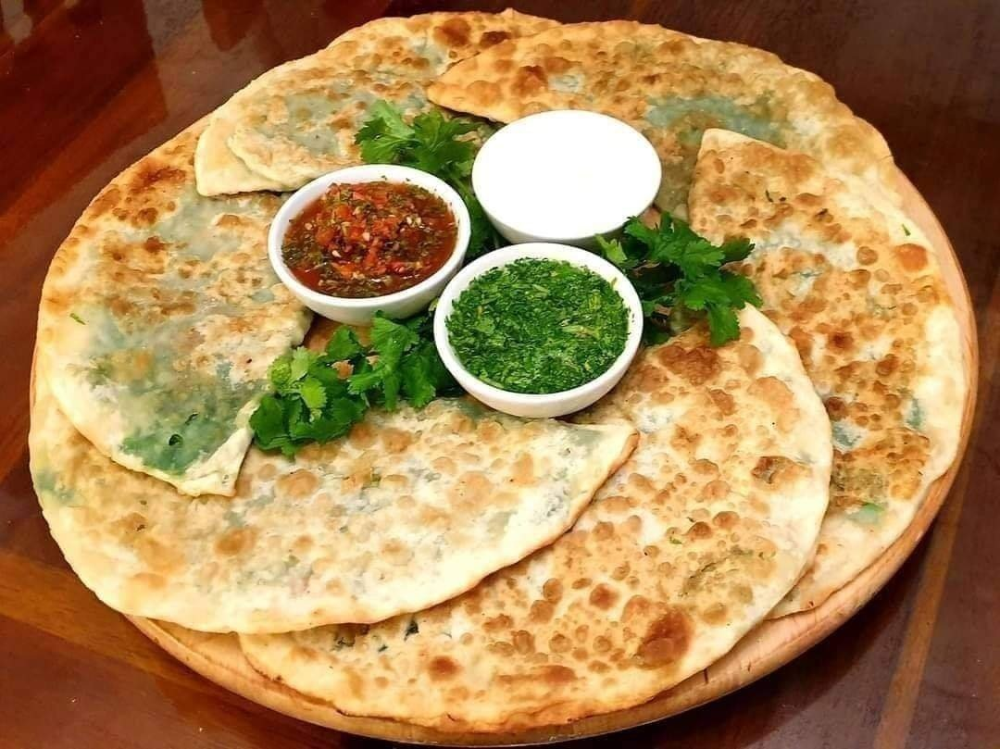

Bolani is a popular stuffed flatbread dish from Afghanistan, also known as Periki. It's typically pan-fried and can be made with various fillings, including potatoes, leeks, pumpkin, chives, red lentils, or minced meat. The dough is often made with all-purpose flour and can be shaped into a half-moon or turnover

Ingredients
Potato
Flour
Water
Salt
Oil
Black Pepper
Chilli
leeks
Cooking Instruction
Prepare the Filling:
Boil and mash 2-3 potatoes, then mix with chopped green onions, cilantro, green chili (optional), salt, and pepper
Make the Dough:
Combine 2 cups flour, 1/2 tsp salt, and water gradually to form a soft dough. Knead, cover, and let it rest for 20-30 minutes.
Assemble the Bolani:
Divide dough into balls, roll each into a thin circle, add filling to one half, fold over, and seal the edges.
Cook:
Pan-fry each bolani in a bit of oil over medium heat until golden brown and crispy on both sides.